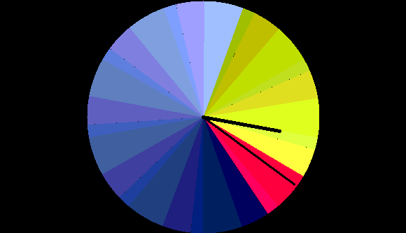
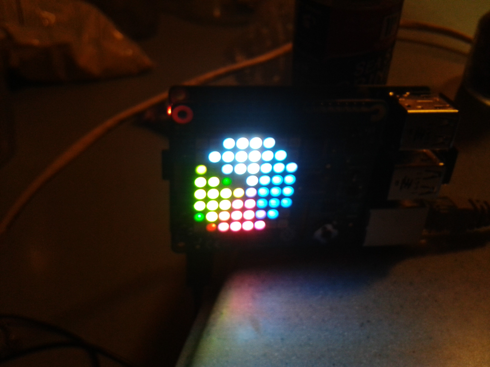

PyCaribbean
I am just relaxing after three fantastic days here in Santo Domingo.
It was the first PyCaribbean conference: Python, palm trees, wonderful people, a meeting of languages: Spanish, python, English, Restructured Text, Markdown, with generous lashings of pandas, ipython and Jupyter notebooks.
Santo Domingo
Santo Domingo is a bustling city of craziness, motorbikes carrying three, cars going in all directions, horns and carnivals.
I speak little Spanish, but my wife is here to interpret, saving me from my failed attempts to communicate. One waiter looked particularly perturbed. Apparently, I had told him I love him in a failed attempt to say how good the food was.
People have been super friendly. Mangling of their language is treated with smiles and help.
Python in Santo Domingo
The conference organisers have done an amazing job building community here in DR. The vast majority of the 200 or so attendees were local and actively using python.
Jorge Vargas talked about how he and others have worked to build up community over the last few years.
Some of the secrets:
- organising monthly meetups, with schedule planned out 3 months ahead.
- co-ordinating with other tech groups: Ruby, Javascript, Linux, Django Ladies and much more. Having a shared calendar to avoid collisions.
- Multiple organisers for each thread to help avoid burn out.
The venue
The conference was held in the Biblioteca Pedro Mir on the University Autonoma de Santo Domingo.
We were staying at a hotel a 15 minute walk, mostly through the campus.
Bermuda Shorts
On the Friday before the conference we walked over to the venue. It is hot and humid here, so shorts were the order of the day.
When we got to the centre the security wouldn't let us in. Interpretter to the rescue: no shorts allowed, a policy for all government buildings.
I felt for the organisers, this is the sort of rule it is easy not to think about, fortunately most attendees had at least one pair of jeans.
The Bermuda shorts had to wait for the evening dinner to make an appearance.
Opening Keynote: when languages collide
Brandon Rhodes, PyCon 20176 chair, gave the opening keynote.
Brandon is always an entertaining speaker and this was no exception.
It was python's unofficial 25th birthday on 20th February, which just added to the excitement that Python had come to the Caribbean.
Brandon spoke of the weirdness that occurs when English meets Spanish, when the English ask, what is that called? "Rio Grande" comes the response. And from then on it is known as the tautological Rio Grande River.
Brandon went through some of the history of the python language and how its design was shaped by other languages.
Python, like all modern computer languaes, or indeed languages in general, is a mash-up of ideas borrowed from other languages. Indeed, computer languages borrow idioms from natural language all the time.
Much of the power and elegance of python comes not from the features it has adopted, but from those it has chosen not to implement.
History was a theme in many talks. I find an understanding of the history can be very illuminating in understanding how we got to where we are and why things are how they are now. It can also be a guide to the future.
Just ten days ago the world of science had been buzzing with the announcement of the LIGO experiments detection of gravitational waves from two black holes, each the mass of more than 30 Suns, colliding over 1 billion light years away.
What has since emerged is the extent to which python was involved in the incredible data analyis that has been able to detect a wrinkle in space time less than the width of a proton as it passed by the earth from a billion light years away.
The world of physics has finally moved on from Fortran to python. Brandon joked that physicists only change language once every 50 years, so this is a significant transition.
He said the speed of the transition has caught many by surprise. And its not just astro-physics, but many other disciplines: biological science, finance, weather and climate, geologists, signal processing, humanities and so much more.
Driving much of this are wonderful tools, in particular, Jupyter notebook, matplotlib, ipython and more.
In short, the tools have reached the point where regardless of your discipline you can quickly learn just enough to quickly investigate ideas.
Python as a way of Thinking
Allen Downey talked about thinking in python.
He talked about expressing thoughts in natural language, mathematics and computer code.
When we write computer code we are turning mathematics something that computers can run.
The language of mathematics is neither executable or easy for humans to understand.
Natural language is rich, but ambiguous and not executable.
Python has often been described as executable pseudo-code, and with good reason.
Allen showed how to move from the world of mathematics and build from the bottom up to a natural interface to your idea.
A highlight of this talk for me was his wonderful transalation of Bayes theorem into python. I will watch out for the code appearing on github and post a link when it turns up.
Code Review, Revision and Technical Debt
Geoff Gerrietts followed Allen's talk with a lot of good advice on the benefits of code review, dealing with technical debt and much, much more.
Supercomputing with python
Paul Logston was another speaker who illustrated the subject with some history.
In his case, this was a brief history of super-computers since the first Cray-1 in 1976.
Comparisons in FLOPs (floating-point operations) are only part of the story, but do give a useful yardstick.
- 1976 Cray-1: 160 mega-flops
- 1984 Cray-XMP, 4 cpu's, ~1 giga-flop
- 2013 Tihane, 34 peta-flops, 32,000 intel Xeons.
So, Tihane has roughly the power of 34 million Cray XMP's. Note however, that much of this increase comes from scaling up the number of processors. To take advantage of this power, your problem needs to be amenable to parallel processing.
Paul showed how to write simple code using python interfaces to MPI (message passing interface) to write code to run on these massively parallel machines.
Paul just does this in his spare time, helping a friend with biological science problems related to DNA and RNA, he just happens to have access to a supercomputer to test his code on.
Keynote: Django Ladies
Ola Sitarska told of her adventure with the django web framework and how the Django Ladies came into being.
The python world is full of tales like this, someone seeing a need, figuring out how to help others and creating tools, documentation and training to build communities.
Django ladies have now run training across the globe. Their tutorials have been read bay millions.
Ola recognised the challenges for women trying to enter a tech world dominated by men and provided tips and guides to help them succeed.
Tech communities have long lacked diversity, PyCaribbean has added another dimension by helping foster community across the Caribbean.
Documentation
The second and final day began with Eric Holscher's keynote on documentation.
Eric created readthedocs and more recently writethedocs.
Documentation is fundamental to making your code accessible to others. And in six months time, even it it is your own code, you will be glad that you wrote the docs.
Again, there was some history of the world of python documentation.
Integration of documentation generation into automated build processes has been a major driver in helping documentation stay in sync with code.
The Django project was mentioned as a project with a process that positively fosters documentation generation.
Eric mentioned some new developments, including new tools which are able to extract docstrings from code without having to import (and hence partially execute) that code.
Eric showed some photos of hundreds of documenation enthusiasts working together at readthedocs gatherings. Who knew, 300 people giving up their time to work together on free software documentation.
I particularly enjoyed this talk as I have a keen interest in documentation driven development and literate programming ideas.
Virtual Reality
Jose Elias gave a fascinating account of the world of virtual and augmented reality.
For the purposes of this talk, virtual reality was focussed on technology that presents virtual worlds using headsets.
Jose gave a history of the subject. Like many technology developments early enthusiam ran into technical issues and the subject was abandonned for a few years.
As technology has caught up, we are reaching a new era of rapid development of VR technology.
Headsets are becoming:
- lightweight
- low power
- low latency, little lag as your head moves around
- higher resolution
- lower cost
There is a lot of excitement in the tech world, with a belief that VR may prove to be as disruptive, if not more so, than smart phones.
Whilst much of the technology is proprietary there are also some significant open source tools, including python of course.
This technology can, and probably will, fundamentally change how humans interact with computers.
One video showed someone creating a virtual vase and placing it in a 3-D printer which then created a real version of the vase.
Machine learning in python
Nick McClure gave some excellent advise on the challenges of working with machine learning and encorporating models into a production environment.
As this talk immediately preceded my own, I missed a lot and look forward to catching up when the video comes out.
As much typing as you want
Andy Fundinger gave a clearly illustrated talk on how python properties can be used to coerce data to specific types.
He began with an overview of how types work in python and the typical ways pythonistas interact with types. The most common approach is to just ignore them altogether, just go with the duck-typing.
One of the beauties of python is that it allows you to probe around in its internals. Done carefully, this can be very powerful.
Andy did not use meta-classes for his tricks, but did raise the possibility, noting that Traits use this approach.
It is something I tend to avoid as you are changing the normal behaviour of python classes. For instance,
Andy noted that the decision to take this route is best decided up-front for a specific framework, being expliicit about just what tricks are being used.
He also gave some helpful advice on how to do this on a minimally invasive way.
I came away with a new trick that may well prove very useful in some future projects.
Building the Caribbean Python Community
I had an extended lunch break talking with others from Jamaica, Puerto Rico and of course the Dominican Republic about how to spread this community across the Caribbean.
As far as I am aware, I was the only attendee from Bermuda. With only 65,000 residents, it is challenging to get the critical mass to hold regular events.
Others are experiencing similar problems on their islands.
We discussed ways to work together and pool resources as well as virtual meet-ups and of course further conferences and gatherings.
There is excellent support from the wider Python community and a very promissing future for Python in the Caribbean.
There will undoubtedly be another PyCaribbean in 2017.
We are also starting to explore ideas for a PyData conference in Bermuda.
Jacob Kaplan-Moss Closing Keynote
Jacob gave the closing keynote extending the ideas from his PyCon 2015 keynote in 2015.
He explored ideas about how people become experts. He referred to research which has shown a lack of evidence of genetic pre-disposition.
He noted that in today's world what we generally need is not individual experts but rather expert teams.
Most of the problems we face require a multi-disciplinary approach. No one individual can hope to know everything and the collective knowledge and skills of any group is always greater than any individual.
The challenge is how to build expert teams. Jacob identified some of the key factors that teams that learn quickly have over those that struggle.
Jacob used data from a research project analysing teams which had been put together to carry out non-invasive heart surgery.
Teams improved quickly when:
- the team members are kept the same initially
- introduce new members slowly with mentoring from the existing members.
- keep the process the same initially (as opposed to a less successful team where the lead liked to introduce something new each time).
- have a team review each procedure
- members are chosen based on their ability to work together well, rather than just going with who is interested or available.
This is another talk where I look forward to the video, there is much to digest.
Wrap up and after party
It is carnival time in Santo Domingo, the streets were full of people in exotic costumes for the carnival, each Sunday in February is party time.
A good time was had by all at the after party at Pasteur 8.
Two days of fun and learning with a wonderful group of people.
I am already looking forward to PyCaribbean 2017 wherever it may be held.
Perspective, Communication, Stress and the Stack
Many years ago there was a programme on the BBC, I can't remember the name.
Groups of high school pupils would present a science project they were working on. I think each programme would cover 2-3 schools and there were also follow-ups on projects to see how they were progressing.
There were all sorts of fascinating things being done. A lot of chemistry experiments, physics, biology too. And there was always a teacher in the background who was inspiring these young people.
I recall one show, where a team was investigating stress. The panel were very much pure scientists. One commented"
"nobody really knows how to define stress".
This stuck with me. It was weird, because pretty much everyone I knew had expeienced stress. There wasn't really a good definition,
The panel were focussed on the fact the team did not really have a clear definition of what they were trying to study.
Stress is everywhere, but it is different for everyone. Each has their own perspective, interests, concerns and fears.
Focussing on the causes of stress it is easy to miss what the essence of the stress feeling is.
This is a personal perspective, but I suspect many will recognise some of what follows.
As the number of things I care about and feel the need to act on increases, so the stress builds.
Computers and being able to fix them
I like fixing things and making things. When you have some pieces you can put together and test an idea, make something work a little better, a little easier then I find that satisfying.
Along the way, each fix uncovers other problems you did not know existed. You find new ideas to pursue, the list of things you care about grows. You find fascinating new ideas, that mesh with other things you care about.
When you work with computers and use modern software tools so many things can be improved. And each improvement is a small step in a good direction.
Rabbit holes
Along the way, the simple task can turn into many other simple tasks.
And meanwhile you encounter new brokenness and want to fix that too.
It is easy to get dragged into rabbit holes, forgetting what you were originally trying to fix.
Burnout
When the stack gets too deep then you have stress. Too many things to think about and no time for any of them. More things arriving faster than you can even process them.
Control
There may be many things you have no control over, but that are important to you and things you care about. You need help from others, but they have their own perspective, their own stack of nightmares.
Stress is not all bad
If you can reduce the stress, get some breathing space, then you have a stack of interesting things to explore.
Unwinding the stack
As you unwind the stack, look for patterns, group items. Look for solutions that address many issue not just one.
Look for bridges to build and look for others at the other side of the ravine who can help you cross and share.
Prune the stack, discard what is not relevant now.
Ask if the things that you cannot control matter? If they do, how can you get help? Who else cares about this? Why do you care?
Dice passwords
Micah Lee wrote an excellent article on diceware. It covers a lot of issues, but guides through how to create a secure passphrase with dice.
It contains some excellent advice, like all security advice, there are subtleties to consider, but the steps advised will be a vast improvement over the current situation.
There are some obstacles, however.
Industry standards
For a long while it has been industry standard to impose rules such as:
- password must contain upper and lower case letters
- password must contain a digit
- password must contain a punctuation
- password must not contain that character
- password must be changed every 90 days
These rules had rationale behind them, but they also have many unintended consequences.
The rules are intended to increase the password space, or the size of the alphabet of characters that are used.
However, few sites explicitly state their password requirements. Often it is like a mini adventure game, discovering the rules, one by one.
And of course, all this is happening when you are having to change your password, when you have more important things to do.
Oh, and don't forget that critical server that has its password in a file, but nobody unchecked the expire password box, that stopped working yesterday.
The end result is by the time all the rules are satisfied the password has degenerated to P4ssw0rd!. Relieved that you have solved the little adventure, you get back to what you were doing.
Until you need to use the password again. And you can't remember it. Well you remember what you started with.
You enter a few random guesses, much to the delight of the man in the middle, because the site is not using http.
Or it is using https, but not securely.
You call a helpdesk and they reset it to W3lcome! for you and everyone else.
Good passwords
Micah points out that it is incredibly hard to think up a good password.
He presents a way to generate a phrase instead. Using rolls of dice to select words from a long list.
Now sadly, none of these high entropy passwords will work for sites imposing these rules.
So you end up changing a few characters in the first word. And this is good, until you go a month without logging on. And then you can't remember which characters you changed.
So, Micah also points out that password managers can be handy for passwords for internet sites, where you don't care so much if the password is broken.
Password managers allow you to use a passphrase to in turn generate random passwords. The function used includes hashing of the web site name.
The only problem here is that some generate passwords that don't pass the site's alphabet soup rules.
Password managers usually allow to specify the alphabet of characters, but even with that sometimes the password they come up with will not satisfy the rules.
This is because they are using the full password space, not arbitrarily shrinking that space.
What can sites do to help?
Do not restrict the size of the password space by imposing alphabet soup rules.
Run a password cracker on your own password database. Inform users whose passwords are crackable. Advise them on how to use a password manager.
And about the password expiring thing, that is another story.
Google sends emails about logins from new devices and has a number of other small things they do which give good feedback which can help with security.
Guido's clock and the Raspberry Pi Sense Hat
Many years ago I was working a simple app to run on a Nokia Series 60 phone.
It was actually before phone apps were really a thing, or even called apps. Nokia had ported python to the Series 60 phones and had some simple libraries you could use to build your Nokia apps.
I created one called anorak. Around the same time Guido Van Rossum posted some code to a thing he called mclock2. Growing up his family had a clock which had three coloured discs and a bright light behind them. The disks rotate through the day giving pretty patterns on the clock. The clock was designed by Rob Juda.
Here is a screenshot from Guido's code.
Guido created a Tkinter application to simulate the clock. I liked the clock, so ported it to Series 60 and used it as the default screen for anorak which was a sort of poorman's GPS using cell tower locations to figure out where I was.
Fast-forward to today and there is the Raspberry Pi and the Sense Hat.
The latter is on the International Space Station. It plugs into the pins on a pi and has:
- Gyroscope
- Accelerometer
- Magnetometer
- Temperature
- Humidity
- Barometric pressure
In addition it has an 8x8 coloured LED array.
I am working on hooking all this up to my moped and wanted to learn about to use the sense hat python interface.
The interface is simple to use, just import the library and create a SenseHat object and then you can talk to the device.
I could not find a drawing library to draw directly onto the 8*8 pixel grid. Instead I used PIL and ImageDraw.Draw.
This allowed me to create a 64x64 image with PIL, with very few changes to the code. I just needed the ImageDraw.Draw().pieslice method.
Now to get down to 8*8 I just divided the image into an 8*8 grid with 8*8 pixels in each grid point.
I then just take the average pixel value and use hat.set_pixel() to set that value.
The hands of the clock did not work too well. In the end I made the hour hand all black with a 10 pixel wide line. The minute hand I did in white, again 10 pixels wide.
Here is a photo of the end result.
So, not quite as neat as the Tkinter version, but I have found I can actually figure out the time from this thing.
UPDATE:
I thought I might be able to do add new method to create pixels. I am creating a 64 * 64 image using the Python Imaging Library tools.
This one uses a weighted average based on Euclidean distance from the center of the 8 * * area being averaged. The resulting clock is looking prettier now.
Currently the hands are being drawn as 12 pixels wide lines, with a black hour hand and a red minute hand.
Depending on what is going on with the coloured disks the time is usually quite easily readable. Sometimes you have to wait a few seconds if there is a lot of red or dark colour on the clock, before you can find the hands.
It is a fun little clock when you only need approximate time.
Sensors
I have been playing with these a little. I have a simple monitor function that can be used to send data from the sensors to the pixel display.
The temperature sensor is a little too close to the pi's processor, so it is affected by the heat from the processor. This topic on the raspberry pi forum had some helpful suggestions.
There are two temperature sensors on the board. One with the humidity sensor and one with the pressure sensor. They are different distances from the pi processor.
The incantation below can be used to get the CPU temperature.:
vcgencmd measure_temp
With these three numbers it should be possible to find a reasonable formula to get a good approximation of the real temperature. To do this I will just have to collect some data to fit a model to.
Joy Stick
I am yet to experiment with this. I suspect it will be fairly easy to set something up so I can use it to switch between different displays.
Storing Readings
This is also on the list. Once I have this working I'll be able to collect data as I am driving around Bermuda. This will include data from the accelerometer and the compass.
Raspberry Pi Forum
There is a raspberry pi forum index which has some forums for a wide range of subjects, including the AstroPy, the other name for the Sense Hat.
Raspberry Pi Sense Hat
I just discovered the raspberry pi sense hat.
I have been thinking about putting together raspberry pi's, sensors and mopeds to make a mobile weather station and more.
So in Bermuda we have mopeds. Power supplies are one thing that is causing me some thinking with pi's. They only need about 5 watts of power. With the pizero, I think it is about 1-2 watts.
Solar is always an option, but then the sun goes in. There is wind and rain too. Lots of ways to get enough power. And batteries to store for when there is nothing.
And of course, mopeds have batteries. They also have this thing that sits between your legs and creates explosions lots of times per second.
Sense Hat
https://www.raspberrypi.org/products/sense-hat/
So I have spend all of five minutes looking at this.
It has sensors for:
- Gyroscope
- Accelerometer
- Magnetometer
- Temperature
- Barometric pressure
- Humidity
And it has a mini joystick as well as an 8x8 matrix display.
It plugs neatly into a pi 2's and I expect could be adapted to the pizero.
Oh, and it is being used for the Astro pi project on the international space station.
I am thinking of adding a wifi chip and a GPS chip. The latter is also good for a real time clock.
The sense had also comes with a python library.
http://pythonhosted.org/sense-hat/
There are all sorts of other tools that look useful.
I can't find it now, but I saw another sense hat piece of code that was storing readings in a python flask app, which is what I have been trying to do with sunshine.
So, all I need now is one of those Apollo helmets for the moped, with the gold coated visor.
New Bermuda Government Web Site
In last week's thrown speech the government announced that a new government web site will be created in 2016.
Why is a new website needed?
The existing government websites are built on top of proprietary technologies such as Adobe Flash.
It would seem the government does not own the code to its own websites.
Contracts were put out to tender, the winning bid invariably ends up owning the code. This locks the government into expensive support contracts from the same contractors.
Systems become unsupportable if built on top of proprietary technology that itself reaches end of life or if the contractor that owns the code goes out of business.
Free Software and Open Data
Free software is software that gives its users the freedom to examine, modify, change and re-distribute the software.
There are now millions of free software projects and the vast majority of successful technology companies are building their products with free software.
It is widely accepted in technology circles that the free and open development methodology results in higher quality software, lower total cost of ownership and more control for users.
Open data is a related concept. Data is made freely available and searchable by all.
Other jurisdictions have embraced open data, appointed open data advocates.
They have run open data book clubs and hackathons to inform their citizens of the data that is available and invite development of innovative new tools.
Will the government consider free and open source solutions?
Many jurisdictions now mandate that solutions be built with free and open software.
Others insist that free and open source solutions are given fair consideration in the bidding process.
Will the Bermuda government be looking at free software solutions?
Will the government insist it has control of the code for its own website?
Will the government ensure it has control over the code running on its own websites?
Will the government empower the community to contribute?
There is a growing community of free software enthusiasts in Bermuda.
Will the government support that community by involving it in the design and development of the new website?
Will it involve schools and the Bermuda college in the design and development of its websites?
Will it empower its people to contribute to their own systems?
Will it open up the process to wide discussion and provide funds to sponsor the best ideas?
Will the government support open data initiatives?
Other jurisdictions have demonstrated the value of making citizen's data freely available and usable by the community.
Will the government embrace open by default. Data will be open unless there is a compelling reason to keep it secret.
Noting that securing data on today's computers is extremely difficult, will the government take steps to reduce to a minimum the amount of sensitive data it stores?
Will the government involve the community in privacy and open data discussions?
Privacy and information security affect everyone living on the island. Will the government invite contributions from the community and an informed discussion about what data should be stored on computers and who should have access to that data?
Kate and Henry's Hacking night at Henry's
What
If you are interested in computing, hardware, software, art, music, culture then come along.
Free and open software.
Open science.
Weather.
Culture.
When
Tuesday's from beer O'clock.
First event: Tuesday 20th October 2015.
I will be there from 6pm Bermuda time.
Where
Henry VII's pub and restaurant in Southampton Bermuda.
If there are four or less will probably just grab a table in the bar.
If there are more I've been offered the room in the back of the sushi restaurant.
Why
Let other's know what you are up to, share ideas, code, music, art.
Have fun.
Who
Anybody and everyone.
Whether you are Henry, Henri, Enrique, Kate, Kathryn or Katrina.
Henry:
Has gone back to Wales, but we can always work on a Henry simulator, plus there are pleny of Henry pictures on the walls. Might not be a wise idea.
Kate:
Things didn't work out too well for Henry's Kates.
There might be hacking, but the only thing being executed will be code.
Agenda
Should we execute this code?
The idea is for someone to present some code that has never been run.
We discuss and debate whether it should be run.
with:
@raspberrry pi @ fish
Contributions
If there are volunteers to present ideas, let me know and I will advertise more widely.
Visitors
If you are visiting the island do come along.
If you want to know how to get to Henry's, number 7 bus will get you there.
From town any number 7, just tell the driver you are going to Henry's or Gibb's Hill Lighthouse.
If you want to climb the lighthouse, note that it closes at 4pm, but it is always a good place to watch the sunset from.
Hurricane Joaquin
Hurricane Joaquim is now category 4 and expected to strengthen some more.
It has been over the Bahamas for a long time now.
Michael Johnston's weather blog is a wonderful, Bermuda centric weather blog and a good resource to check for those in Bermuda wondering if Joaquin is heading this way.
Michael is currently studying meteorology at Penn State. He worked at the Bermuda weather service this summer.
Uncertainty in paths
There has been consdierable disagreement across models over what track this storm will take.
The weather systems are complex at present. The models are coming into better agreement.
In situations like this it would be very useful to have more information on the likely intensity given each path.
The National Hurricane Centre discussion is always helpful. It feels like the forecasts are getting better at getting the intensity right, given the right track.
The track tends to be driven by larger systems whose interaction is hard to predict. But often, given the direction the hurricane travels we can learn a bit about how those systems will evolve.
I believe that open and free software combined, with open scientific collaboration, can help communities better prepare for these events.
Direction of change in model predictions
The way the model predictions move can be informative.
One of the models may have been leaning more in that direction, all of them would likely have assigned some probability to the general direcion.
There seems to be some inertia in the models, so sometimes as they shift the direction of the forecast, the next update also moves a little in that direction: when the forecasts are changing, more change is often more likely, it indicates that the driving features are changing.
Climate Change
Sometimes it indicates there is a new factor in play.
Climate change is increasing occurrences of unusual weather. Regions are experiencing conditions at the extremes of what they have experienced.
In many cases these are conditions that the region is poorly adapted to.
The models will also be experiencing conditions outside the area where they have been callibrated.
This will provide good data and new insigts to improve them for the future.
Bermuda
The first anniversary of Fay and Gonzalo is fast approaching.
For now Joaquin is moving very slowly, battering Caribbean islands.
The latest forecasts have it well west of Bermuda.
The track should become more certain over then next 24 hours or so.
Latest 11,00pm EDT October 1, 2015 discussion has this paragraph:
The forecast models continue to indicate a track farther away from the United States east coast and the threat of direct impacts from Joaquin in the Carolinas and mid-Atlantic states appears to be decreasing. However, the threat of impacts in Bermuda has increased and a Tropical Storm or Hurricane Watch could be required for that island on Friday.
It would be good to have more info on the likely intensity should it take a path close to Bermuda.
There still appears to be a fair bit of uncertainty about the path.
Computing Hermeneutics: let the source be with you.
Someone asked me recently to explain the difference between coding and programmes, using a suitable analogy.
I am not good at short answers, so here is a longer one.
The difference between the source code and the programme has changed dramatically over the years.
In essence, the problem boils down to humans specifying what a computer should do. We speak different languages, our input/ouput devices work differently and our central processing units are fundamentally different.
In short, computer programming is a bit like writing a document for someone to read, but that someone does not speak your language.
It takes everything you say literally and has no capacity to "do what I mean, not what I say".
They can do certain tasks incredibly quickly, like the gifted child that can amaze you with music, maths or art.
Coding
Coding is the process of writing the instructions for the computer.
Source Code
The source code is what the computer programmer creates. It is the human readable version of the computer instructions.
Programme
The human readable instructions generally need to be converted into another form for the computer to understand. The resulting version is known as the programme.
Electro-Mechanical computing
The computers at dawn of modern computing were electro-mechanical devices such as the Bombes, designed by Alan Turing to crack the Enigma codes.
Programming the Bombes involved manyally setting dials and using wires to enter settings on plug boards.
With these devices, the source code and the programme were essentially the same thing: the physical settings of the wheels, dials and plug-board.
In short, humans learned to speak the same language as the computers.
Machine Code
The first fully electronic computers were programmed with machine code, essentially just a stream of numbers.
Each operation the computer could do had a numeric code. Memory locations were expressed as numbers as were the input values for calculations.
Again, the human programmers were having to learn the language the computer actually understood.
There was some help for humans, the machine code might be written in hexadecimal, not the binary that the computer can actually store.
Assembly Language
All this was incredibly time consuming. Skilled machine code programmers were a rare breed. Computers were also quite rare at this time, so there were generally enough programmers to go round and they were too busy writing machine code to worry about creating and learning new languages.
Further, getting data into and out of these early computers was a challenge in itself.
Soon punched cards and computer tape took over these roles.
Assembly languages were developed. These languages used names such as add, mul and mov to represent the numeric operations the computer actually understands.
Special programmes, called assemblers were used to translate from this assembly language that was easier for humans to produce to the machine language that the computers understood.
The task of programming was still very challenging, but by now the version of the code that the computer understood and was able to use was different to that the programmer writes.
Computers and programmers were still pretty rare species.
High level languages
Once there were assembly languages it was a natural progression to higher level languages.
These languages had higher level constructs that compilers could translate into assembly language and in turn the assembler could turn into machine code that computers could run.
This separation later proved invaluable, since different models of computer had different instruction sets and required different assembler languages.
Bootstrapping
Writing a compiler for a new language is a challenging task.
It is common practice to write the compiler in the language that it is intended to compile.
Now this creates a chicken and egg situation.
How do you compile your compiler, if it is written in a new language?
There are a number of solutions to this problem that have been used, but all boil down to using some other compiler to pull you up by your boot straps.
Often these tools implement a subset of the language, but can be used to compile the whole compiler including the additional features.
Once you have got this far, you can use your newly compiled compiler to compile itself. The language has become self-hosting.
Virtual Machines
The early computers were extremely slow compared to today's computers. Compilers would be written for each specific architecture in order to take full advantage of the computer's capabilities.
As computers became faster it became feasible to write virtual machines.
These virtual machines would implement a general purpose instruction set. To actually run virtual machine code on a specific computer architecture it is necessary to create an implementation of that virtual machine on the specific hardware.
The magic of virtual machines is that it separates the problem of making a particular machine run fast from the problem of specifying what you want it to do.
In short, virtual machines promised: write once, run everywhere.
Java and .NET are good examples of virtual machine technology.
Interpreted languages
Compiling code can be time consuming. The higher level a language is the more work the computer has to do to translate the language into something it can run.
Good compilers will also attempt to optimise code, allowing the programmer to specify what the computer should do, but letting the compiler figure out an efficient way to do that.
Of course, the programmer can help the compiler by using algorithms and constructs that they know the compiler will implement efficiently.
As computers became faster it became possible to do compilation of code on the fly.
Programmers using compiled languages go through a cycle of
- writing code
- compiling the code
- running the code
- figuring out why it did not do what they expected
- rinse and repeat
The compile stage can be time consuming and interrupts a programmers train of thought.
Interpretted languages typically also make use of a virtual machine. They compile the code into virtual machine byte codes that can then be executed directly.
Perl and Python are examples of interpretted languages. I remember when I first discovered Perl, my productivity went up dramatically.
Literate Programming
Computer programmes can (and in my view should) be considered as works of literature: written works to communicate not just with computers but also with other computer programmers.
It turns out that most programmers spend the vast majority of time reading, maintaining and developing existing code, rather than writing new code.
There is a strong incentive for programmers to write clear code that is easy for others to follow: the person most likely to read your code is yourself. Maybe six hours later, six days, six months or even six years in the future.
Great languages not only make it easier to express what you want the computer to do but also make it easier to write readable code.
Truly great languages make it harder to write code that looks like it does one thing, but really does something else.
At the same time, they allow some level of ambiguity. They work on many levels, lika all great literature.
For example, a sort algorithm that can sort anything, just so long as you tell it how to compare objects.
Open Source
Open source software is software that makes the source code available, not just the executable.
Why is this important? Well if you want to understand what the software is doing, the best way to do that is to have the work of literature that the programmers creating the programme used.
Open source software makes these works of literature available to you. It is like having the actual draft for a book. Not only do you get the story, but you get the author's notes.
If the programmer is using version control, you get the whole history of the book. All the thoughts, all the experiments that were tried, the failures and the successes.
Without the source code, you are missing much of the plot.
Free Software
Free software takes this one step further. Not only does it give you the work of literature, but it gives you the freedom to examine it, to change it, to write your own story.
It gives you the freedom to experiment and explore.
Disassembly
Disassembly is the reverse of what an assembler does.
Dissassemblers take code that a computer understands and turn it into code a human can understand better.
Some of them are remarkably good and produce code that an experienced programmer can understand well.
For example, python bytecodes can be disassembled into very readable python code.
Code obfustification
Some software is put through an obfustification process before it is released.
The meaningful function and variable names that the programmer used are replaced with arbitrary labels. Comments are removed from the code. In short, the goal is to make it hard to discover how the programme actually works.
Of course, the code can always be disassembled and with enough patience and time it is possible to discover how it actually works.
However, check the license agreement before you do this, much closed source software explicitly forbids disassembly in the license agreement.
Project Jypyter
Nowadays there are many, many computer languages.
This has created a problem for computer programmers: they are not all speaking the same language.
What is needed is some sort of Bablefish that allows programmers and programmes to communicate with each other.
Project Jupyter is one such Bablefish. It supports over 50 languages and allows seamless interaction between those languages.
It is all about language and communication
Software is all about communication. If you are a computer, machine code is your friend.
If you are human, Use the source, Luke.
And if the source is not available, maybe you need to read a different book.
Mountains, Valleys and Bridges
Hill Climbing
I grew up close to the hills of the Peak District in Derbyshire.
The highest point of the Peak District is the summit of Kinder Scout. This is also the first hill along the Pennine Way.
Most times I have climbed it via Grindsbrook. It is steep in places and follows alongside a small river and stream. This used to be the Pennine Way route, but now the official route takes you up the gentler, but no less strenuous, Jacob's Ladder.
I am not even sure if I have ever made it to the highest point on Kinder Scout. The summit is more of a plateau, a strange landscape of tiny streams running along little valleys cut into the peat the covers the summit.
Most times I have been there it has been covered in cloud, navigating with the help of a compass.
But on a clear day you can walk to the spectacular Kinder Downfall and see all the way to Manchester and even beyond to the mountains of Snowdonia.
In the UK, hills become mountains if they are 3000 feet or higher. Snowdonia has mountains, the Peak District has hills.
False summits
Some hills I have climbed tease you with false summits. You think you are nearing the top, and then as you clamber over rocks, behind what you thought was the summit, the route continues, onward and upward. Some hills have many false summits, each more enticing than the last.
Summits
Reaching a summit is always a highlight. Stood on the highest point in the area and, weather permitting there will be uninterrupted views all around.
Following a Ridge
Having toiled to climb a hill you will rightly be satisfied with the view you have.
Sometimes, when you look across the land there is a spectactular hill, dwarfing the one you have just climbed. You can only imagine how the view might look from there.
Often the new summit is easily accessible from where you are, by following a ridge that connects to the peak you have just climbed. A small descent and a longer climb may be all that is needed to reach a new high-point.
The ridge acts like a natural bridge between two summits.
Bridging the valley
Sometimes there is no such bridge. Curiosity might drive you to attempt the larger peak in the distance, but descending into the valley after all that hard work climbing, just to climb another hill, can be a daunting task.
There may be a river in the valley bottom, difficult to cross and requiring a detour.
Bridges across valleys connect those either side. They can be difficult to build. Without people either side willing to work together it may not be possible to cross the divide.
Crossing a new bridge requires courage too. There are rope walkways across plunging gorges that I for one do not have the courage to cross, let alone be the first to try out.
The first across are generally the bridge builders, often crossing before the bridge is complete, fixing it along the way.
The Millennium Bridge across the Thames in London. When people started to walk across the bridge, the rhythm of their steps caused it to resonate and wobble. It was closed for months for modifications.
Soldiers always break out of step when marching across a bridge, for a similar reason.
Those who build bridges have courage and vision, leading the way to a new mountain with a more spectacular view, or uniting communities previously separated by a plunging ravine.
Going the long way round
Often there is no bridge, the valley may be too wide or deep, or just not enough people wanting to cross to justify a high-level crossing.
Then you can rest at the summit, admire the view and be content with your achievements.
But you may be intrigued by the mountain you have seen.
Descending into the valley you may get that sinking feeling, as you lose all that height that took so much work to gain.
The valley bottom may have a bubbling river where you can drink, perhaps catch a fish and regroup for the climb ahead.
Once, refreshed the long climb starts. As you climb you can gauge progress by looking across to the hill on which you once stood.
At some point you will draw level with the summit and once again be able to see the view beyond the hill.
You may be daunted, recalling how much taller this mountain is, how much more you have to climb.
But every step takes you higher than you were before.